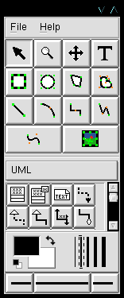
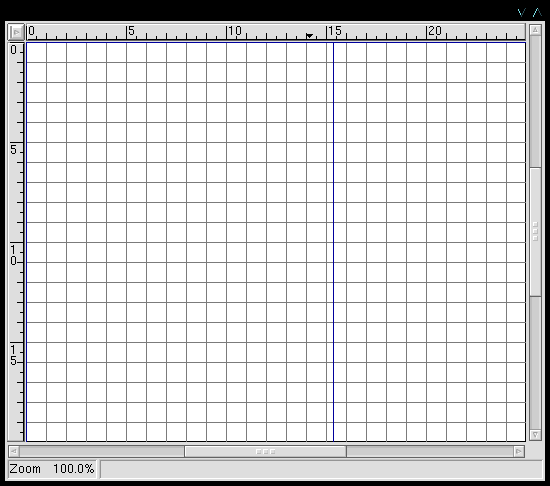
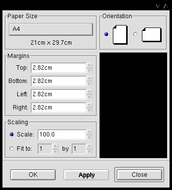
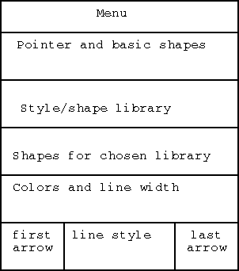
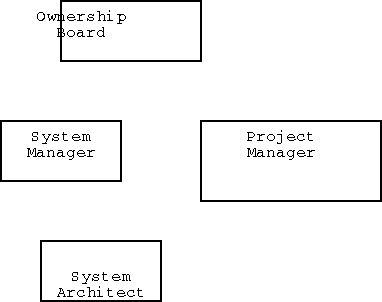
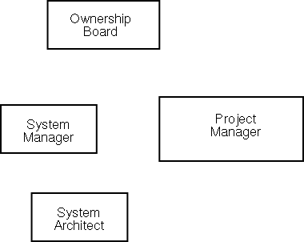
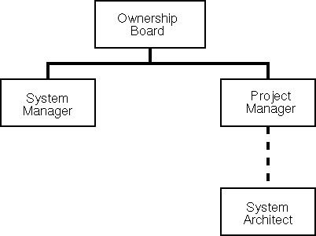
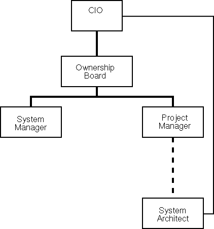

Once installed, the app is started with:
dia
This gives:

The first time up, you click File...Preferences and fill in personal choices. These are saved in your home dir as .dia/diarc. For example, I generally use the defaults except I make sure it is set to:
After clicking OK on the preferences, you can make a diagram.
Clicking File...New gives:

Right-clicking in that window gives a diagram-specific menu. From that select File...page setup:

Typically:
After clicking OK, the page setup goes away and you are ready to populate the diagram.
An organization chart requires several boxes with text, some piped solid lines, and a few dashed lines. This can be done with the basic tools. So how do we use the basic tools?
Notice the mainwindow's layout:

If you hold the mouse over an icon, a tooltip will appear. If you click an icon, the tool is activated and any clicks in the diagram will provide a copy of that tool. After clicking and placing one or more copies of a shape, click the pointer tool (top left arrow icon) before attempting to move things around. (Otherwise you will get lots of unexpected shapes.)
The easiest way to work is to:
For an org chart, we'll start with:

That looks terrible. The text doesn't line up with the boxes, and the font is tacky. How can we fix it?
We could use a box which knows about text, and resizes around text. The boxes in the Flowchart library (e.g., the square) can do this. We could even make our own shape which knows about text.
But let's do it the hard way for now, with the basic box.
First, get the font right. Select a text item. Right-click to get the menu, then Dialogs...Properties. Select Helvetica. Leave the size as is -- we can scale later. Do this for each text item.
Next, carefully center the text in the box. Drag the box bigger if needed. Since the default is snap-to-grid, it will be difficult to align the text. So let's turn off snap-to-grid for a moment: With the pointer tool, click somewhere in the diagram (but not on a specific item), and type "g". Drag the text as needed, then type "g" again to toggle back to snap-to-grid.
Ok, the text is the right font and is aligned nicely. Let's lock those box-and-text combinations together. Use the pointer to drag a selection box (dashed lines) around a box-and-text combo. Type "Ctl-G" to make them a group. Do this for each of the boxes.
If you need to un-group a combo (e.g., to edit the text or realign), type "Ctl-U". For example, we notice misspellings, so we ungroup to fix those and then regroup.
We now have:

Now we can draw some lines. We'll use the piped lines (90 degree turns). We draw them approximately from one item to the next, and then use the pointer to drag the ends directly to the handles at each end. The line end turns red when it locks in to a handle.
We want to make the lines more interesting.
In general, lines are controlled from the main window in several ways:
All of these apply to future lines. You can also modify an already-drawn line. Select it using the pointer. Right-click to get the diagram menu. Select Dialogs...properties. This brings up a dialog for changing any of the line's properties.
Thus, to fix our current lines: For each line, select the line, right-click to get the menu, select Dialogs...Properties, and change the line width from 0.1 to 0.2. Change the System Architect-to-Project Manager line to dotted line. But the wide dots look odd, so we change to dashed lines. The dashes are too long, so we make the dash interval 0.5. The net effect is:

Let's say the Systems Architect actually reports to the CIO (via a long chain of middle managers of course). We want to note that, but not over emphasize it. So we draw it in a thin line:
Ugh. We want that line to go around the outside. But there aren't enough middle bending points in the line to do it. So we select the line and the middle-click, to get the add-segment dialog. After adding a segment or two, we can drag the line to make a nice connection:

Ok, the diagram looks pretty good. Time to save it. First, we want to save the intellectual content, so we can later modify it. Second, we want to export it as a specific graphic format.
To save it, right-click for the menu, then File...Save. Insert the name, e.g., org.dia, and click OK. If you are saving a whole series of variants on the same file and need to save each to a separate file, use File...Save As. The file is saved in an XML format which is mostly Scalable Vector graphics (SVG). NOTE: Since we set Compress to No in the user preferences, we can examine the file in a text editor. Go take a look.
To export a usable image, select File...Export, and then enter the name with an appropriate extension, e.g., org.png. Look at the extensions list for candidates. If you don't have a preference, we suggest png (Portable Network Graphics).
A simple export may make a rather large image. If you look closely at the diagram window, you can see blue lines representing printable pages. Your diagram probably extends over several pages. So if you print out the diagram to a physical printer, you will need to tape the pieces together. This is not much of a concern for HTML, where the browser can pan back and forth over a large image. However, even for HTML a large image can be awkward.
So here is the recommendation:
Do this via File...Page setup...Scaling...Fit 1 by 1. This will show the scaling needed to fit the whole diagram on one page. But even that may be too large, so you can switch back to Scaling...Scale, and tweak the numbers until a convenient size is found for your HTML context.